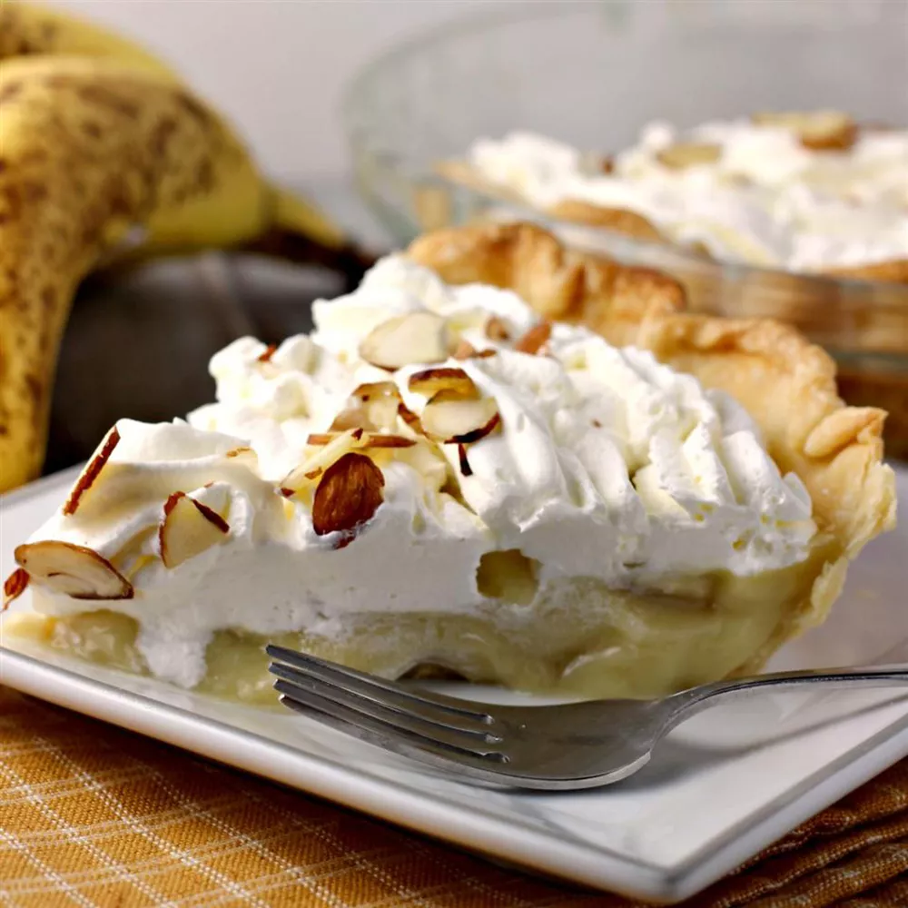

Banana Cream Pie

Description
Creamy and smooth, this banana cream pie is sure to be a family favorite. Ready to serve in about 2 hours and easy to prepare ahead of time, this pie is perfect for any occasion.
Ingredients
- 2 cups milk
- 3/4 cup sugar
- 1/3 cup all purpose flour
- 2 Tbsp butter
- 1 1/4 tsp vanilla extract
- 1/4 tsp salt
- 3 egg yolks, beaten
- 4 bananas, sliced
- 1 (9 inch) pie crust
Steps
- Preheat oven to 350 degrees F
- Combine sugar, flour, and salt in a saucepan
- Slowly add milk
- Cook over medium heat, stirring constantly, until thickened then remove from heat
- In a medium bowl, whisk egg yolks and a small amount of hot milk until smooth
- Slowly add egg mixture to the saucepan
- Cook over medium low heat, stirring constantly, until the mixture coats the back of a spoon
- Cook for 2 more minutes, then remove from heat
- Fill pie crust with sliced bananas and pour pudding mixture overtop
- Bake at 350 degrees F until filling sets (approx. 12 to 15 minutes)
- Let cool to room tempurature on a wire rack
- Chill in refrigerator for at least 1 hour before serving